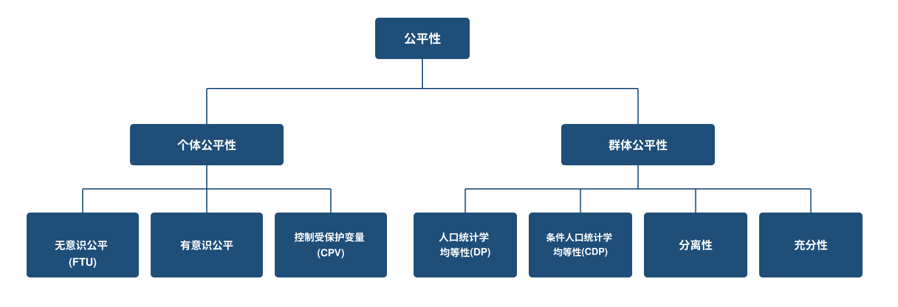

公平性原则
负责任人工智能:原则、治理与量化方法
学习目标
- 区分关于自动化决策系统中歧视与公平性的社会、法律与经济视角。
- 描述并比较各种量化公平性准则及其底层假设。
- 将公平性准则与模型设计选择及监管背景联系起来。
- 说明为什么没有任何一种单一的公平性准则能够同时满足所有利益相关方的诉求。
第一步:什么是公平?
引出问题
自动化决策系统正日益决定着谁能获得贷款、面试机会、诊断、某个价格,乃至在部分司法辖区,一项与刑事量刑相关的风险评分。人们容易将公平性视为一种单一的、可直接检验的属性,一个模型要么具备,要么不具备。下面这个案例说明了事实并非如此。
2016年,ProPublica 的调查报道 Machine Bias 对美国法院所使用的再犯风险评估工具 COMPAS 进行了审视 (Angwin 等 2016年)。在两年内未再犯的被告人中,黑人被告被标记为“高风险”的比例,几乎是白人被告的两倍。该工具的供应商则反驳称,COMPAS 具有良好的校准性:在获得相同风险评分的被告人中,不同种族之间的再犯率相近。
双方的说法都有其依据,而这恰恰正是问题所在。ProPublica 的批评本质上是一种分离性论证(各群体间错误率相等),而供应商的辩护本质上是一种充分性论证(各群体间校准性相等)(Chouldechova 2017年)。一个工具完全可能满足其中一项准则,却违反另一项,而优先选择哪一项准则,并非事后才需要解决的建模细节问题,它正是本章要展开讨论的核心问题。
这种分歧并非COMPAS数据所特有的巧合。只要两个群体的再犯率、违约率或理赔率存在真实的差异,同时满足分离性与充分性在数学上就几乎不可能,除非是少数特殊情形。本章后文的“准则之间的不相容性”一节将对此给出精确说明。
公平性是否已经实现?
这没有单一的“是”或“否”答案。答案取决于你使用上文两项准则中的哪一项,分离性还是充分性,来检验这个模型。
公平性的三重视角
不同的利益相关方,以及不同的法律体系,给出的答案各不相同 (Frees 和 Huang 2023年; Barocas 和 Selbst 2016年)。
| 视角 | 强调的重点 |
|---|---|
| 反歧视 | 避免不公平待遇和不合理差异性结果的法律义务 |
| 相互竞争的伦理观念 | 分配正义、团结互助,以及成本或收益应当被集中分摊还是个体化承担 |
| 消费者/用户信任 | 合同、披露文件与行为准则中所作出的承诺 |
这三重视角并不总是指向同一个方向。梳理这三者的意义,在于在构建任何模型之前,使权衡取舍变得可见。
特征选取原则
在重大决策中是否应当使用某一输入特征,并非纯粹的统计学问题 (Frees 和 Huang 2023年)。
| 原则 | 关键问题 |
|---|---|
| 可控性 | 该特征是否可由本人施加影响? |
| 可变性 | 该特征会随时间变化,还是保持固定? |
| 统计性歧视 | 该特征是否能够预测所关注的结果? |
| 因果性 | 该特征是否导致了被预测的结果? |
| 历史性歧视 | 使用该特征是否会强化历史性的不公正? |
| 具有社会价值的行为 | 使用该特征是否会抑制有益的行为? |
示例改编自 Frees 和 Huang (2023年)。
- 可控性:是否拥有跑车是投保人可以自主改变的选择;而性别、种族、族裔或国籍等属性,则是本人完全无法施加影响的。
- 可变性:年龄会随时间可预测地变化,而出生地等固定属性则始终不变。
- 统计性歧视:车辆发动机排量能够预测车险理赔频率,因此满足了具备预测价值这一必要条件,但仅有预测价值本身并不能决定该特征是否应当被使用。
- 因果性:癌症诊断已知会导致死亡风险上升,因此在寿险承保中使用该信息通常被认为是可接受的。
- 历史性歧视:基于肤色进行区别对待,比基于眼睛颜色进行区别对待更成问题,因为肤色与一种受保护、且历史上曾遭受歧视的特征相对应,而眼睛颜色则不然。
- 具有社会价值的行为:若保险决策基于基因检测结果作出,可能会抑制人们参与基因检测研究,而参与此类研究本身是一种具有社会价值的行为。
预测能力是必要条件,但并不充分。一个预测效果很好的变量,如果在因果性、历史性或社会价值行为方面存在问题,仍然可能是有问题的。招聘中使用的信用评分和保险承保中使用的基因检测都是例证。监管机构正是基于这一逻辑采取了行动:美国已有11个州(最近一次是纽约州,自2026年4月起)限制或禁止雇主在招聘决策中使用信用记录审查,理由是信用记录与工作表现之间并未被证明存在因果联系,且信用记录本身反映了历史性的经济不平等 (Martinez 2026年)。
直接歧视与间接歧视
直接歧视(差别对待)是指仅因某项受保护特征不同,一个人便受到较不利的对待。如果模型不使用受保护属性,则可排除这种情形。
间接歧视(差异性影响)是指一个人因某项表面中立的做法间接推断出其受保护身份,而受到不成比例的影响。
现代自动化决策中存在两种渠道 (Xin 和 Huang 2024年; Barocas 和 Selbst 2016年):
- 可识别代理变量 是表面中立、实为受保护属性替代物的变量(例如与种族相关的邮编,以及与照护者身份相关的简历空白期)
- 不可识别代理变量 是指那些不透明的模型,它们在没有任何单一明显替代变量的情况下,复现了受保护群体间的差异
代理性歧视特指上述可识别代理变量渠道背后的具体机制:一个表面中立的变量,既与某一受保护群体相关,又恰恰因为这种相关性而对结果具有预测力,而非出于某种独立、合法的理由 (Prince 和 Schwarcz 2020年)。间接歧视是更宽泛的法律概念,并不局限于这一种机制。它还涵盖上述不可识别代理变量渠道(不存在单一变量承载该效应的情形),以及系统仅仅因为其训练标签本身就带有历史歧视印记、从而复现过往歧视性决策的情形,如下文的医疗领域实例所示。
通过无意识实现公平(即移除受保护属性),如果代理变量或复杂算法依然存在,并不能保证输出结果的公平。Obermeyer 等 (2019年) 记录了一个被广泛引用的医疗领域实例。某医院算法使用医疗支出作为医疗需求的代理变量,用以分配护理管理资源。由于黑人患者历史上获得医疗服务的机会更少,在同等潜在需求水平下,他们产生的支出更低,因此该模型系统性地对其转介不足,而这一切都发生在从未将种族作为输入变量的情况下。
公平性准则:一套分类体系

设 X_P = 受保护属性,X_{NP} = 其他特征,Y = 实际结果,\hat{Y} = 预测结果或决策。符号 \perp 表示统计独立(知道其中一个变量,并不能告诉你关于另一个变量的任何信息),\mid 表示“给定”或“在……所界定的群体内”。
个体公平性
| 准则 | 形式化条件 | 直观含义 |
|---|---|---|
| 无意识公平(FTU) | \hat{Y} = f(X_{NP}),X_P 不作为输入 | 移除受保护属性 |
| 有意识公平 | D(\hat{Y}(x), \hat{Y}(y)) \le d(x, y) | 相似的个体应获得相似的结果,通过一个明确的相似性度量 d 来衡量,而非通过移除 X_P 来实现 (Dwork 等 2012年) |
| 控制受保护变量(CPV) | \hat{Y}_{CPV}(x) = E_{X_P}[f(x_{NP}, X_P)] | 在评分时,对完整模型在 X_P 上取平均 |
在有意识公平这一条件中,x 和 y 是两个具体个体(特定的特征向量),而非本表其他位置所使用的总体层面随机变量 X_P 和 X_{NP}。\hat{Y}(x) 和 \hat{Y}(y) 是他们各自的预测结果分布,d(x, y) 是一个针对具体任务而定的、衡量两个个体相似程度的指标,而 D 则衡量二者预测结果之间的差距。该条件是说,依据 d 判定为相似的两个个体,其预测结果之间的差距,不能超出这种相似性所允许的范围。
无意识公平与有意识公平是算法公平性文献中的通用概念,适用于任何领域。CPV 针对的则是一个不同的问题:代理性歧视,即受保护属性本身虽未被纳入模型,但其他变量仍携带着该属性的影响。通过在评分时将模型预测结果对 X_P 取平均,可以直接消除这一残余影响,而不是仅仅依赖 X_P 未作为输入这一事实。该方法最初由 Pope 和 Sydnor (2011年) 针对统计画像这一更一般的问题提出,后由 Lindholm 等 (2022年) 改造并应用于保险定价,称为“无歧视定价”。
群体公平性
| 准则 | 形式化条件 | 直观含义 |
|---|---|---|
| 人口统计学均等性(DP) | \hat{Y} \perp X_P | 所有群体的预测结果分布相同 |
| 条件人口统计学均等性(CDP) | \hat{Y} \perp X_P \mid X_{L} | 在合法细分市场内(即由本章后文所述、被认可为公平差异化依据的因素所界定的细分市场)预测结果相等 |
| 分离性 | \hat{Y} \perp X_P \mid Y | 各群体间预测误差(真阳性率、假阳性率)相等 |
| 充分性 | Y \perp X_P \mid \hat{Y} | 校准程度相等,即所有群体在相同的 \hat{Y} 下,Y 的期望值也相同 |
分离性 追问的是:在给定真实结果 Y 的条件下,不同群体间的预测误差是否相同。
\Pr(\hat{Y} > t \mid Y = y,\, X_P = 0) = \Pr(\hat{Y} > t \mid Y = y,\, X_P = 1) \quad \forall\, y, t
充分性 追问的是:在给定模型预测 \hat{Y} 的条件下,不同群体间的真实结果是否相同。
\Pr(Y = y \mid \hat{Y} = s,\, X_P = 0) = \Pr(Y = y \mid \hat{Y} = s,\, X_P = 1) \quad \forall\, y, s
分离性建立在以 Y 为条件的错误率之上;充分性则建立在以 \hat{Y} 为条件的预测值之上。下表为每一种组合命名:
| 事件 | 条件 | 对应概念(\Pr\{\text{事件} \mid \text{条件}\}) |
|---|---|---|
| \hat{Y}=1 | Y=1 | 真阳性率(TPR,召回率) |
| \hat{Y}=0 | Y=1 | 假阴性率(FNR) |
| \hat{Y}=1 | Y=0 | 假阳性率(FPR) |
| \hat{Y}=0 | Y=0 | 真阴性率(TNR) |
| Y=1 | \hat{Y}=1 | 阳性预测值(PPV,精确率) |
| Y=0 | \hat{Y}=0 | 阴性预测值(NPV) |
二者都是值得追求的目标,但当各群体的基准率(每个群体中正向结果的实际比例)不同时,分离性与充分性通常无法同时满足,完美预测等特殊情形除外。
这与单一分类器中常见的精确率-召回率权衡背后是同一种机制:随着决策阈值的变化,精确率(PPV)与召回率(TPR)会朝相反方向变化,因为PPV是TPR、FPR与基准率的函数(下文推导的贝叶斯法则关系)。分离性与充分性之间的权衡,正是这同一种权衡被应用到群体之间,而非应用到阈值变化上。即便让两个基准率不同的群体拥有相同的TPR与FPR(即召回表现相同),它们的PPV(精确率)仍会不相等,原因与单一分类器的精确率随召回率变化而变化完全相同。
监管框架
公平性监管大致通过四种机制发挥作用,每一种都对应本章中的某一项准则或设计选择,并且在不同司法辖区以不同的制度形式反复出现。
- 禁止变量规则 直接禁止使用某一受保护属性,例如美国禁止在信用评分中使用种族。这对应的是 FTU,因为该属性从一开始就不会作为输入变量。
- 代理性歧视规则 针对的情形是:受保护变量本身虽未被使用,但其他变量依然承载着它的效应,而非一概禁止。Colorado 的 SB21-169 要求保险公司对算法和预测模型进行测试,以排查这种代理效应所引发的不公平歧视,而 New York 的 DFS Circular Letter No. 7 则对用于承保与定价的人工智能系统和外部数据施加了类似的要求 (Colorado General Assembly 2021年; New York State Department of Financial Services 2024年)。中国的《互联网信息服务算法推荐管理规定》从相反的方向处理了一种相关的代理效应,禁止利用消费者自身的数据对其收取比其他消费者购买同一产品更高的价格 (国家互联网信息办公室 2022年)。这对应的是 CPV。
- 差异性影响或均等性规则 直接检验模型的结果,例如五分之四原则(美国就业法下的一项招聘比例基准)以及保险中的社区费率(不论个体风险高低,对同一群体内的所有人收取相同价格)。Colorado 的 SB21-169 测试制度也是这一逻辑在实践中最清晰的监管范例,因为保险公司必须证明,在扣除合法定价因子的影响之后,其预测模型不会产生不公平的歧视性结果 (Colorado General Assembly 2021年)。这对应的是群体准则(DP、CDP)。欧盟统一性别保险定价规则是同一逻辑更严格的个体层面版本。评级档案相同(即在车辆类型、年龄等所有允许使用的定价因子上取值相同)的一男一女,必须获得相同的价格,而不仅仅是平均价格相同。FTU 直接满足这一要求,因为在这种情况下,价格仅仅是允许使用的定价因子的函数,性别不起任何作用。CPV 同样满足这一要求,因为在评分时,顾客自身的性别从未被直接使用,而只是被取平均,因此两位在非受保护特征上相同的顾客会获得相同的价格。
- 算法影响与透明度义务 要求部署机构对模型的公平性属性进行记录、测试与解释,无论其选择了哪种设计或准则。这是一项程序性义务,而非实质性义务。没有任何一种模型设计能单靠自身满足这一义务,因为它是附加在所选设计之上的,而不是内嵌于设计之中的。New York 的 DFS Circular Letter No. 7 要求保险公司维持治理框架,并向监管机构解释模型输出结果 (New York State Department of Financial Services 2024年)。纽约市《144号地方法》要求对自动化招聘工具每年进行一次独立偏见审计 (New York City Council 2021年)。加州的私家车保险监管规定(Title 10 CCR §2632.5)对同一目标采取了更具体、更机械化的实现方式。该规定要求三项强制性定价变量在定价中所占权重必须高于任何一项可选变量,而这一要求只能借助第四章所介绍的特征重要性方法加以核实 (Xin 等 2025年)。新加坡金融管理局的 FEAT 原则将透明度列为金融机构必须处理的四个必要维度之一,并通过 Veritas 计划的评估方法将其落地为可操作的流程 (Monetary Authority of Singapore 2018年, 2019年)。中国国家金融监督管理总局针对银行与保险业的指导意见,在其自身的透明度要求之外,也将“避免算法歧视”列为一项必要的治理要素 (国家金融监督管理总局 2026年a)。澳大利亚人权委员会(AHRC)与精算师协会联合制定的保险指引,对承保与定价设定了类似的文档记录与问责要求 (Australian Human Rights Commission and Actuaries Institute 2022年)。
完整的跨司法辖区监管格局比较,请参见第一章。
准则之间的不相容性
同时实现个体公平性与群体公平性,往往是不可能的 (Krafcheck 等 2026年; Xin 和 Huang 2024年; Mehrabi 等 2021年)。这是一个更一般性结论的特例:除了少数特殊情形外,当各群体的基准率不同时,没有任何分类器能够同时满足校准性与各群体间错误率的均衡 (Kleinberg 等 2017年)。这正是本章开头 COMPAS 案例中的张力所在。ProPublica 的批评本质上是一种分离性论证,而供应商的辩护本质上是一种充分性论证。两者各自成立,但由于不同种族的再犯基准率不同,二者无法同时被满足。
记 p_g = \Pr(Y=1 \mid X_P=g) 为群体 g 的基准率,并考虑一个二元决策 \hat{Y} \in \{0,1\},其假阳性率为 \text{FPR}_g = \Pr(\hat{Y}=1 \mid Y=0, X_P=g),假阴性率为 \text{FNR}_g = \Pr(\hat{Y}=0 \mid Y=1, X_P=g)。根据贝叶斯定理,阳性预测值,即被标记为高风险的人实际再犯的概率,也就是充分性所要求在各群体间保持相等的量,为
\text{PPV}_g = \frac{p_g(1 - \text{FNR}_g)}{p_g(1-\text{FNR}_g) + (1-p_g)\,\text{FPR}_g}
如果分离性成立,即各群体间 \text{FPR}_0 = \text{FPR}_1 且 \text{FNR}_0 = \text{FNR}_1,那么在 \text{FPR} 与 \text{FNR} 保持不变的情况下,\text{PPV}_g 就仅是 p_g 的函数。对于一个非完美的分类器而言,\text{PPV}_g 会随 p_g 的变化而变化,因此 \text{PPV}_0 = \text{PPV}_1(充分性)只有在 p_0 = p_1 时才可能成立。在 COMPAS 案例所依据的布劳沃德县数据中,两年内的再犯率黑人被告为51%,白人被告为39% (Chouldechova 2017年),即 p_0 \neq p_1,因此分离性与充分性无法同时成立,除非处于两种极端情形:分类器完全准确(\text{FPR}=\text{FNR}=0),或分类器完全不利用数据。
数值示例。 取两个各有100人的群体,基准率取整数以便计算,其差距与COMPAS案例中的真实差距相近。两个群体的假阴性率均设为相同的10%,假阳性率均设为相同的20%,因此分离性严格成立。
群体A的混淆矩阵
| 预测为高风险(\hat{Y}=1) | 预测为低风险(\hat{Y}=0) | |
|---|---|---|
| 实际再犯(Y=1) | TP = 27 | FN = 3 |
| 实际未再犯(Y=0) | FP = 14 | TN = 56 |
群体B的混淆矩阵
| 预测为高风险(\hat{Y}=1) | 预测为低风险(\hat{Y}=0) | |
|---|---|---|
| 实际再犯(Y=1) | TP = 54 | FN = 6 |
| 实际未再犯(Y=0) | FP = 8 | TN = 32 |
基于混淆矩阵的这四个格子,各群体的标记比例、TPR/FPR与PPV可分别计算为:
\text{标记比例}_g = \frac{TP + FP}{TP + FP + FN + TN} \qquad \text{TPR}_g = \frac{TP}{TP + FN} \qquad \text{FPR}_g = \frac{FP}{FP + TN} \qquad \text{PPV}_g = \frac{TP}{TP + FP}
下表将这些公式应用于上述两个混淆矩阵。
| 群体A(p_0 = 30\%) | 群体B(p_1 = 60\%) | |
|---|---|---|
| 再犯(Y=1) | 30 | 60 |
| 未再犯(Y=0) | 70 | 40 |
| 正确标记为高风险 | 30 \times 90\% = 27 | 60 \times 90\% = 54 |
| 错误标记为高风险 | 70 \times 20\% = 14 | 40 \times 20\% = 8 |
| 被标记为高风险的总人数 | 41 | 62 |
| 标记比例_g(人口统计学均等检验) | 41\% | 62\% |
| \text{TPR}_g,\ \text{FPR}_g(分离性检验) | 90\%,\ 20\% | 90\%,\ 20\% |
| \text{PPV}_g(充分性检验) | 27/41 \approx 66\% | 54/62 \approx 87\% |
标记比例本身在两个群体间相差悬殊(41% vs 62%,即人口统计学均等被违反),尽管按构造,\text{TPR}_g 与 \text{FPR}_g 在两个群体间完全相同(这正是分离性)。\text{PPV}_g 也并不相等(这正是对充分性的违反)。
即使两个群体的假阳性率与假阴性率完全相同,“高风险”标记中实际正确的比例仍从66%跃升至87%,原因仅仅在于群体B的基准率更高。若要让两个群体的标记比例相等(人口统计学均等)或让PPV相等(充分性),都必须为它们设定不同的假阳性率与假阴性率,而这恰恰违反了分离性。
直观而言:如果一个工具在两个群体中给出“高风险”判断时同样可靠,但其中一个群体的再犯确实更为常见,那么该工具就必然会在该群体中标记出相对更多的高风险个体,其中也包括更多最终不会再犯的人。这体现为该群体更高的假阳性率,这是基准率差距所带来的数学结果,而非该工具预测不可靠的证据。
准则之间的权衡取舍,其本身就是公平性讨论的一部分,而不是需要修复的建模缺陷。
关于公平性准则、模型设计及其量化实现方式(全程以一个保险定价案例研究加以说明)的更深入技术论述,请参见:
第一步(界定公平性) 与 第二步(设计公平定价) 与本章内容直接对应,并通过实例演示和用于探索公平性—准确性权衡取舍的互动工具对其加以扩展。第三步(评估影响) 与 第四步(审计系统) 将在本章后文简要概述,而该网站则以选读延伸阅读的形式,对其提供了更深入的技术论述。
资源分配的两种逻辑
公平性究竟意味着个体化定价,还是集中分摊成本,取决于某项商品或服务本身是如何被定性的 (Frees 和 Huang 2023年)。
| 立场 | 强调重点 | 分配逻辑 |
|---|---|---|
| 社会性商品 | 团结互助、可及性、普遍服务 | 补贴式团结 |
| 经济性商品 | 效率、逆向选择、道德风险 | 机会式团结 |
逆向选择 是指高风险人群更倾向于购买保险,因为相较于保险公司,他们更了解自身的风险状况。道德风险 是指拥有保险本身会改变行为,从而使被保风险本身变大。补贴式团结 是指不论个体风险高低,在所有人之间分摊成本。机会式团结 则是分摊“谁将会发生理赔”这一共同的不确定性,而定价本身仍然追踪个体风险。
精算公平性 是指每一位保单持有人(持有保险保单的个人)应当只为自己的风险付费,且仅为自己的风险付费 (Frees 和 Huang 2023年)。
欧盟对基于性别的车险定价的禁令(2012年)正体现了这一冲突。欧洲法院裁定,男女平等待遇这一原则优先于性别作为车险理赔的一个统计学有效预测变量这一事实 (European Court of Justice 2011年)。该禁令并未消除男性与女性驾驶员之间实际存在的风险差异——它只是重新分配了谁来为这种风险差异买单。
强制性的车险和健康险常被视为社会性商品,保费在群体间集中分摊。自愿投保的人寿保险则更类似于一种按竞争性市场定价的产品,其中更精细的风险分级(将客户细分为更具体的风险类别以便定价)通常是被接受的。同样的张力远远超出保险行业本身。医疗服务的获取,究竟应当按个体风险定价,还是作为一种社会性商品集中分摊?订阅服务应当按个人使用成本收费,还是采用统一费率?
消费者/用户信任
第三重视角追问的是:该系统是否兑现了机构对其用户所作出的承诺。
- 许多具有重大影响的关系都依赖于信息不对称。用户本着诚信原则披露信息,而机构则掌握着远远更多的数据和建模能力。保险合同将这一点正式化为最大诚信原则(即双方都有义务诚实披露相关事实)(Frees 和 Huang 2023年)。
- 一个结果即便合规,如果它偏离了已披露的承诺、在没有明确解释的情况下发生变化,或以意想不到的方式使用了信息,仍可能让人感到不公平。
- 并非所有的待遇差异都是由被预测的结果本身所驱动的 (Frees 和 Huang 2023年)。一项决策可能出于与个人实际风险或价值无关的原因而区别对待不同的人,例如根据某人比价、议价或更换服务商的可能性大小。这种与结果无关的差异化对待,是引发用户担忧的一个反复出现的根源,并且当其背后的行为因素(价格敏感度、议价能力、忠诚度)与某个受保护属性相关时,争议会更大 (Xin 和 Huang 2024年)。
遵守反歧视规则,对这一视角而言是必要条件,但并不充分。
第二步:设计公平模型
公平性如何在模型中被落实?
建模流程中的三个阶段 (Xin 和 Huang 2024年; Mehrabi 等 2021年):
| 阶段 | 具体做法 | 模型 |
|---|---|---|
| 预处理 | 在训练前调整输入变量 | MDP、MCDP |
| 处理中 | 将公平性直接构建进训练目标函数 | 约束优化 |
| 后处理 | 在训练后调整输出结果 | MC |
选择哪一阶段,取决于第一步中所选定的准则,而非取决于哪一种实现起来最容易。
五种模型设计
| 模型 | 准则 | 方法 |
|---|---|---|
| M0(完整模型) | 基准 | 同时使用 X_P 和 X_{NP} |
| MU(无意识) | FTU | 仅使用 \hat{Y} = f(X_{NP}),移除受保护属性 |
| MDP | 人口统计学均等性 | 对所有 X_{NP} 进行预处理,以消除与 X_P 的相关性 |
| MCDP | 条件人口统计学均等性 | 保留合法预测变量;仅对非合法变量去偏 |
| MC | CPV | 拟合 M0,随后在评分时对 X_P 取平均 |
这些设计是在保险定价数据上被形式化并验证的 (Xin 和 Huang 2024年; Lindholm 等 2022年),但每一种都对应着公平机器学习应用中普遍使用的一种通用模式:无意识、无条件去偏、条件去偏,以及事后平均。
第一步中的准则是通过一个分类问题的例子(COMPAS的二元高风险标记)引入的,但保险定价通常是一个回归问题:Y 是连续量(理赔频率、理赔金额或纯保费),而非0/1决策。Xin 和 Huang (2024年) 正是在这一回归情境下,对下文的五种设计进行了形式化。人口统计学均等可以直接推广:它不再要求标记比例相同,而是要求各群体间的平均预测值相等,下文案例研究中差异性影响比率的计算方式正是基于此。分离性与充分性的分类形式(TPR/FPR相等、PPV相等)在 \hat{Y} 为连续变量时并无混淆矩阵可供依据,因此在此处应用这两项准则,意味着将其背后的核心思想推广到连续结果变量上,而非直接套用TPR/FPR/PPV公式。五种设计本身与这一选择无关:无论选定何种准则、又以何种方式将其推广至连续结果变量,同一套设计工具都可用于满足它。
沿用 Xin 和 Huang (2024年) 中的记号:X_{NP} 被划分为合法预测变量 X_{NP_{legit}} 与非合法预测变量 X_{NP_{not}}(用于MCDP),Y 为响应变量(理赔频率、理赔金额或纯保费),\hat{Y} 为预测值。
\hat{Y}_{M0} = f_{M0}(X_{NP}, X_P) \hat{Y}_{MU} = f_{MU}(X_{NP}) \hat{Y}_{MDP} = f_{MDP}(X_{NP}^*) \hat{Y}_{MCDP} = f_{MCDP}(X_{NP_{not}}^*,\, X_{NP_{legit}}) \hat{Y}_{MC} = \frac{1}{N}\sum_{j=1}^N \hat{f}_{M0}(X_{NP},\, X_P = x_{P_j})
X_{NP}^* 是 X_{NP} 去除与 X_P 相关性后的去偏版本(而 X_{NP_{not}}^* 仅对非合法子集应用相同的去偏处理),这正是本节其他地方所用记号 \tilde{X}_{NP} 与 \tilde{X}_{NL} 所指的量。一种构造方法是正交预测变量法:将 X_{NP} 对 X_P 回归,取其残差,X_{NP}^* = X_{NP} - \hat{X}_{NP},该方法由 Frees 和 Huang (2023年) 首先提出并应用于保险定价。M0、MDP 与 MCDP 在训练与预测阶段都需要用到 X_P;而 MC 仅在训练阶段需要 X_P,因为在预测阶段,x_{P_j} 取遍的是总体中受保护属性的各个取值,而非投保人本人的实际取值。
Barocas 等 (2023年)(第三章)区分了以算法方式满足非歧视准则的三种通用技术:预处理、处理中与后处理。任何一项具体准则(例如人口统计学均等性)都不与其中某一种技术绑定。MDP、MCDP 与 MC 只是本课程为各自基于一种技术所构建的模型设计所起的专有名称,原则上,同一底层准则也可以通过不同的路径来实现。哪一种技术切实可行,取决于你对数据和训练流程拥有怎样的访问权限,而不是哪一种“更正确”。
预处理 在训练之前调整非受保护的预测变量,因此无论后续如何训练,所得到的模型都无法重构出 X_P 的影响。这一保证源自数据处理不等式,MDP 与 MCDP 正是据此在本课程中被形式化的。最简单的实现方式是正交化(残差化),即减去条件均值:对每一个 X_j \in X_{NP},计算 \tilde{X}_j = X_j - E[X_j \mid X_P],然后用 \tilde{X}_{NP} 而非 X_{NP} 进行训练。这从构造上保证了 \hat{Y} \perp X_P(人口统计学均等性),但只消除了对 X_P 的均值依赖关系。非线性或更高阶的依赖关系仍可能保留下来。最优传输 (Lindholm 等 2024年b) 则更进一步,重新映射每个预测变量的整体分布,而非仅仅是其均值,代价是计算上更为复杂。Kamiran 与 Calders(2012)(Kamiran 和 Calders 2012年) 针对更广泛的分类问题,开发了相关的预处理技术。MCDP 仅对非合法预测变量 X_{NL} 应用所选定的技术,合法预测变量 X_L 保持不变。若采用正交化方法,即为 \tilde{X}_{NL} = X_{NL} - E[X_{NL} \mid X_P, X_L],并基于 (X_L,\, \tilde{X}_{NL}) 进行训练。这样一来,结果差异仍可通过合法因子体现,而由非合法代理变量所引入的差异则被消除。
处理中 方法直接将公平性约束构建进训练目标函数(约束优化),而不是先对输入变量进行变换。由于分类器是在纳入该约束的前提下进行优化的,这一路径能够在给定的公平性水平下实现最高的准确性,但它需要访问原始数据和训练流程,并且通常会将实现方式与某一特定的模型类别绑定。其优势之一在于,预测时不需要获取 X_P。Lindholm 等 (2024年a) 使用一个多任务神经网络实现了这一方法,将公平性准则直接嵌入训练过程。
后处理 调整的是一个已训练模型的输出结果,而非其输入变量或训练目标。这正是 MC 的方法:完整拟合 M0,然后在评分时对受保护属性取平均,\hat{Y}_{MC}(x) = \frac{1}{N}\sum_{j=1}^N \hat{f}_{M0}(x_{NP},\, X_P = x_{P_j}),这样便消除了 X_P 对个体预测结果的直接影响,同时保留了在非受保护特征上的准确性。后处理的主要优势在于,它可以作用于任何已训练的黑箱模型,无需重新训练,这使其成为你无法掌控训练流程时的唯一选择。Barocas 等 (2023年) 指出,如果被后处理的评分本身已经是贝叶斯最优的,后处理甚至可以被证明是最优方案。其代价在于,它在决策时刻明确使用了群体身份信息,某些监管制度会将其视为差别对待,即便其意图是纠正性的。
合法变量与非合法变量
合法因子 是监管机构、雇主或机构认可其可作为差异化对待依据的因子。
- 保险:理赔记录、车辆类型、年行驶里程和驾龄通常是合法的。而在某些市场,特定的信用数据或精细化的地理指标则不是。
- 信贷:收入和还款记录通常是合法的。仅凭邮编通常不是。
- 招聘:与岗位相关的技能和经验是合法的。受保护特征的代理变量则不是。
MCDP 正是针对这一区分而设计的。群体之间的差异,仅允许通过合法变量体现。非合法预测变量在训练前会针对 X_P 进行正交化处理。
监管如何映射到模型设计
监管的严格程度构成一个从“无限制”到“完全集中分摊”的光谱。
- 无限制 → M0(基准)
- 仅禁止使用 X_P → MU
- 同时禁止代理变量 → MU*
- 平均结果相等(DP) → MDP
- 完全集中分摊/社区费率 → 集中分摊结果
MU* 表示 MU 的一个扩展版本,它不仅移除 X_P 本身,还移除被明确认定为 X_P 代理变量的定价变量(例如某项特定监管规定下被列名禁止的变量清单)。普通的 MU 则不触碰这些变量。MU* 依然不会触碰那些未被列名、或仅凭统计推断出的代理变量,而这正是 MCDP 与 MDP 所要捕捉的对象。
并非每一项监管要求都能干净利落地对应到单一的统计准则上。这在原则导向型监管体系中相当普遍:中国2026年针对银行业与保险业机构发布的 NFRA 指引,要求机构避免算法歧视,但并未规定某一种具体的公平性准则 (国家金融监督管理总局 2026年a, 2026年b; 新浪财经 2026年)。澳大利亚人权委员会与澳大利亚精算师协会联合,将一般性的人权原则应用于保险承保与定价,同样未强制规定具体的统计检验方法 (Australian Human Rights Commission and Actuaries Institute 2022年)。新加坡 MAS 的 FEAT 原则,要求机构自行界定、衡量、论证并监测其人工智能驱动的定价或承保系统中的公平性,并通过 Veritas Initiative 的评估方法加以落实 (Monetary Authority of Singapore 2018年, 2019年),同样不规定单一准则。在每一种情形下,机构都必须运用第一步所培养的判断力,自行决定哪一种准则(或几种准则的组合)能够满足监管机构所确立的原则。
公平性—准确性权衡取舍
一个常见的担忧是,公平性约束会大幅降低模型的准确性。
Xin 和 Huang (2024年) 基于法国车险的案例研究证据:
- MCDP 与 MC 所实现的赔付率(保费收入中用于赔付理赔的比例)与不受约束的 M0 接近
- 预测准确性的下降幅度有限
- 结果差异的下降幅度显著
- XGBoost 在满足公平性准则的同时,保留了其大部分预测优势

M0 直接使用受保护属性,是图中最准确的模型,但也是偏离五分之四容忍区间最远的模型。MDP 和 MCDP 将差异性影响比率拉回接近1的水平,而 RMSE 的上升幅度很小。MCDP 与 MC 则将该比率略微压低至1以下,即便如此,相较于 M0 而言,准确性上的代价依然很小。同样值得注意的是,在这一特定数据集上,MU(无意识公平)恰好落在五分之四容忍区间之内。这是该数据集特定代理变量结构所带来的特征,而非一种普遍性的保证。这正是本章前文将 FTU 视为必要但不充分条件的原因所在。
这种模式(以有限的准确性代价换取显著的公平性提升)在其他领域中也反复出现。Rodolfa 等 (2021年) 在教育、心理健康、刑事司法和住房安全等领域中都发现了这一点,Hardt 等 (2016年) 在信用评分中也发现了类似的模式。Mehrabi 等 (2021年) 对更广泛的证据进行了综述。公平性的代价比通常设想的要小,但并非为零,严格的人口统计学均等性会带来更大程度上、相当于结果层面逆向选择的风险敞口。这是一项商业决策,但它是可以被量化的。
第三步与第四步(选读概览)
本课程聚焦于第一步与第二步,即界定一项公平性准则,并设计出能够落实该准则的模型。完整框架中还存在另外两个步骤。以下仅作简要概述以供了解(本课程不作深入讲授),完整的技术论述可在 fair.feihuang.org 获取,如你的工作需要的话。
第三步:评估下游影响(简述)
一个满足其公平性准则的模型,一旦其预测结果进入真实的业务流程,依然可能产生不公平的结果。如果在一个公平模型之后,还应用了某个下游环节(重新排序、自由裁量式的人工干预,或单独的利润率或资格调整),而该环节又与某个受保护群体相关,那么模型阶段所实现的公平性就可能被抵消。这种情况可能出现在招聘、定价或信贷等领域,只要一个公平模型的输出结果,事后被另一个不受约束的独立环节所调整。有关量化这一问题的福利分析方法(该网站以一个保险定价实例加以说明),请参见 fair.feihuang.org — 第三步。
第四步:审计系统(简述)
审计 追问的是:我们能否证明合规性。测试 追问的是:我们能否发现问题。一次可信的审计,会在查看数据之前预先设定好其测试方法、容忍度和控制变量,并使用等效性检验(TOST,即双单侧检验),而非传统的显著性检验。TOST 检验的是某项差异是否小到足以落在可接受的范围之内,而不仅仅是检验该差异是否不为零,因为未能检测出违规行为,并不等同于证明了合规性。举证责任在于被审计的机构,而非监管机构 (Huang 和 Hooker 2026年)。
另有一种更早的传统,直接检验盲性,而不遵循预先设定的统计学检验程序。它将仅在所关注属性上有所不同的匹配对送入真实的决策系统(例如,一份除姓名外完全相同的简历,一份使用听起来像黑人的姓名,另一份使用听起来像白人的姓名),然后比较其结果 (Barocas 等 2023年, 第七章)。这正是 Bertrand 与 Mullainathan 关于招聘歧视的经典简历审计研究背后的设计,也是本章后文自身的大语言模型案例研究背后的设计。Huang 等 (2026年) 固定除申请人所声明性别之外的所有其他因素,比较模型输出结果在这一单一变量变化前后的差异。
完整的审计规程,包括针对确定性算法的 HC3 修正推断方法,以及对代理性受保护属性的处理方式,请参见 fair.feihuang.org — 第四步。
大语言模型的公平性考量
以上全部内容都假定模型拥有一个固定的输入结构:一组明确界定的特征、一个明确界定的受保护属性、一个单一的预测结果。大语言模型(LLMs)打破了这一假设。这里不存在一列名为“性别”的变量,“预测结果”本身是开放式文本。同样的底层关切(该系统是否以某种要紧的方式区别对待不同群体?)依然适用,但偏见的来源和衡量方式都发生了变化。
偏见从何而来。 大语言模型的行为受其训练语料库塑造,而训练语料库会复现其所训练文本中固有的刻板印象和失衡现象 (Bender 等 2021年),随后又受到对齐微调(例如基于人类反馈的强化学习)的进一步塑造,而对齐微调本身又编码了训练数据标注者的偏好 (Ouyang 等 2022年)。这里不存在单一可移除的“受保护属性”。偏见可能体现在措辞选择、语气、默认假定的视角,或者哪些职业/角色与哪些人口群体相关联之中,而这一切都没有任何显式的输入字段在驱动。
为什么衡量更加困难。 第一步中的群体公平性准则(人口统计学均等性、分离性、充分性)都是比较各群体间一个界定明确的 \hat{Y}。而一项开放式生成任务并不存在单一的 \hat{Y} 可供比较。评估一个大语言模型的输出是否“公平”,通常需要借助模板化探测(例如替换姓名或代词,比较替换前后生成文本的情感倾向或有害程度),而非直接套用上述准则。Gallegos 等 (2024年) 对这一领域进行了综述,发现了数十种被提出的指标,但对于某一具体应用场景应采用哪一种指标,业界几乎没有共识。这一领域的成熟度,远不及本课程所聚焦的表格型分类场景。
Huang 等 (2026年) 对六个大语言模型(包括 GPT-5、GPT-4o 以及 Gemini 和 Claude 系列模型)在1,388项车险理赔案例上进行了审计,采用反事实设计(改变一个输入变量,如声明的性别,同时保持其他一切不变,以分离出该变量的影响),将申请人声明的性别分为四个类别(男性、女性、非二元性别,以及未说明),而非传统审计所使用的男/女二元划分。在信息完整的情形下,六个模型中没有一个表现出统计显著的男/女差异。但一旦纳入非二元性别或未说明性别的申请人,或者一旦从提示词中移除申请人姓名,其中三个模型便表现出显著差异。其中一个模型的理赔金额偏见,甚至会依姓名是否出现而反转方向。这一结果说明,一次仅限于二元性别比较、且仅使用单一提示词配置的审计,可能会将某个模型认证为无偏见,却遗漏了只有在测试全部类别和条件范围之后才会显现的差异。这正是上文所述衡量难题的一个直接例证。
Tanlamai 等 (2026年) 将 GPT(被提示扮演房地产经纪人)生成的房价,与284,749套美国房产的人工挂牌价格进行比较,随后检验这两组价格中,是否分别体现了那种已被充分记录的模式,即白人主导社区的房屋定价高于少数族裔主导社区中可比房屋的定价。生成式人工智能所生成的价格并非完全没有歧视,但其种族价格差距比人工生成的价格小8.7%,并且这一缩减效应在四个不同的大语言模型(GPT-4、GPT-3.5、Gemini 1.5 和 Claude 3.5)之间都保持稳健。这与一种常见的假设相悖,即认为基于历史数据训练的生成式人工智能只会简单地复现或放大既有的歧视。将这项研究与上文的保险理赔审计并读,两项研究从相反的方向说明了同一个道理:一个大语言模型究竟是缩小还是扩大了某种差异,取决于具体任务以及测试的严谨程度,而非取决于某种适用于一切应用场景的、笼统的“人工智能偏见”属性。
实践意义。 如果一个大语言模型被用作某项重大决策中的一个组成部分(例如,为理赔调查员总结理赔档案,或为保单持有人起草初步回复),同样的第一步问题依然适用:在这里,一个不公平的结果会是什么样子,又会影响哪些群体?这一答案必须逐案具体分析,因为标准的表格型指标无法直接套用。
小结:四步框架
| 步骤 | 问题 | 产出 | 本课程涉及深度 |
|---|---|---|---|
| 1. 界定公平性 | 哪一种准则适用于这个系统和情境? | 达成一致的公平性标准 | 完整讲授 |
| 2. 设计公平模型 | 哪一种模型设计能够落实该准则? | M0、MU、MDP、MCDP 或 MC | 完整讲授 |
| 3. 评估影响 | 一旦输出结果进入真实系统,谁将获益,谁将受损? | 按受保护群体划分的影响分析 | 简要概览 |
| 4. 审计系统 | 我们能否通过预先设定的测试证明合规性? | 审计规程与结果 | 简要概览 |
推荐阅读
主要资源
- fair.feihuang.org — 第一步:界定公平性 — 本章所展开的特征选取原则、公平性准则分类体系,以及反歧视/伦理/消费者信任三重视角
- fair.feihuang.org — 第二步:设计公平定价 — 五种模型设计、预处理/处理中/后处理三个阶段,以及公平性—准确性权衡取舍
- Frees 和 Huang (2023年) — 定价特征选取原则与精算公平性
- Xin 和 Huang (2024年) — 公平性准则、模型设计,以及基于保险数据的权衡取舍
- Barocas 和 Selbst (2016年) — 关于差异性影响的基础性法律与技术论述
- Barocas 等 (2023年) — Fairness and Machine Learning: Limitations and Opportunities,可在线免费获取。第二章(“分类”)对本章的公平性准则分类体系作了完整的技术论述
- Hardt 等 (2016年); Mehrabi 等 (2021年) — 通用机器学习公平性准则与综述
- Dwork 等 (2012年) — “有意识公平”的原始论文,也是“个体公平性”这一术语的出处
- Kleinberg 等 (2017年) — 证明当基准率不同时校准性与均衡错误率通常无法同时成立的开创性论文
- Pope 和 Sydnor (2011年) — CPV 更一般化的统计画像版本,早于其保险专用形式化表述
- Angwin 等 (2016年); Obermeyer 等 (2019年) — 刑事司法与医疗领域中代理性歧视的非保险类案例研究
- Gallegos 等 (2024年); Bender 等 (2021年) — 专门针对大语言模型的偏见与公平性研究
- Huang 等 (2026年) — 对六个大语言模型在真实保险理赔案例上的性别偏见进行的反事实审计,纳入了非二元性别与未说明性别类别
- Tanlamai 等 (2026年) — 生成式人工智能生成的房价所体现的种族价格歧视,小于人工生成的房价,且这一结果在四个大语言模型间保持稳健
选读延伸阅读(第三、四步)
- fair.feihuang.org — 第三步:评估影响 — 福利分析与下游结果分析
- fair.feihuang.org — 第四步:审计系统 — 预先设定的审计规程与等效性检验
- Krafcheck 等 (2026年) — 面向人寿保险的更广泛公平性指标分类体系
- Huang 和 Hooker (2026年) — 预先设定的审计规程与修正推断方法